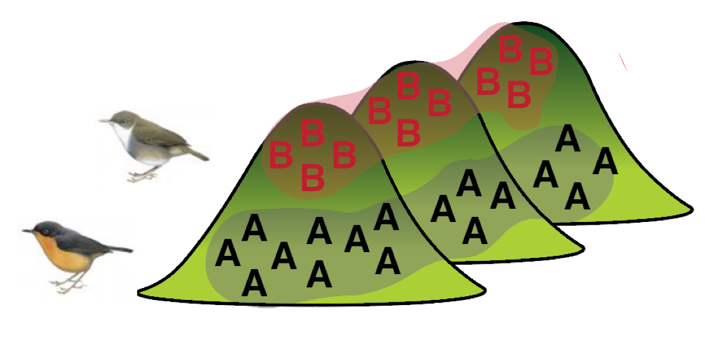
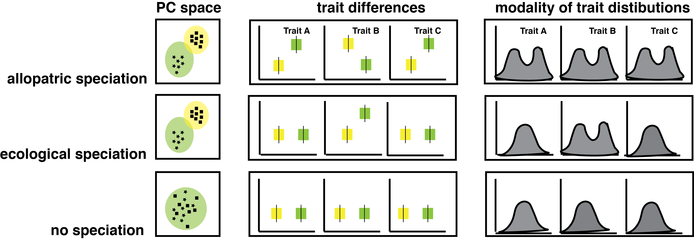
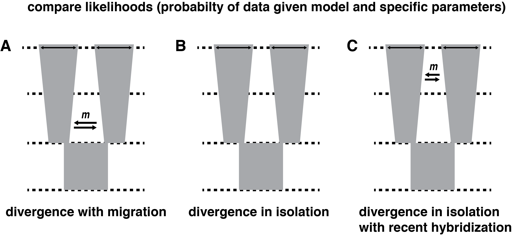
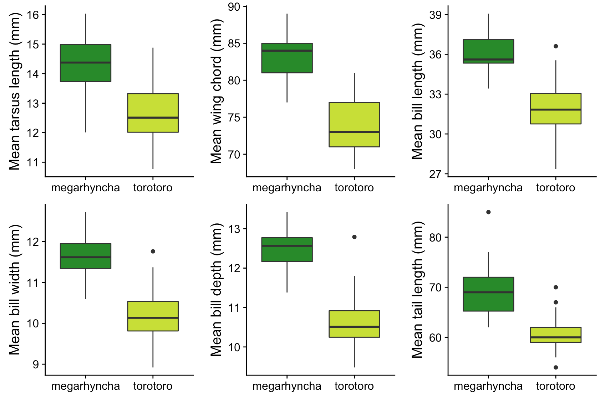

class: center, middle .left-column[ ] .right-column[ .title[Ecological speciation across an elevational gradient in New Guinea kingfishers?] .author[Ethan Linck<sup>1</sup>,] .coauthor[Ben Freeman<sup>2</sup>, Jack Dumbacher<sup>3</sup>, John Klicka<sup>1</sup>] .institution[*<sup>1</sup>University of Washington, <sup>2</sup>University of British Columbia, <sup>3</sup>California Academy of Sciences*] .center[<img style="width:7%" src="../figures/twitter-512.png"> @ethanblinck] <h3>#AOS18AZ</h3> ] --- class: center ## Adaptation and speciation -- .left-column2[<img style="width:100%" src="../figures/finches.png">] .right-column2[ Price 2007, Lomolino et al. 2005] --- class: center ## Tropical mountane biodiversity -- .left-column2[<img style="width:70%" src="../figures/americas_lgb.png">] .right-column2[ ] --- class: center ## Evolutionary ecology of elevational replacements -- .left-column2[<img style="width:100%" src="../figures/allopatry.png">] .right-column2[<img style="width:100%" src="../figures/parapatry.png">] --- class: center ## *Syma* kingfishers -- .center[<img style="width:100%" src="../figures/study_system.png">] --- class: center ## Predictions: phenotype -- .center[] --- class: center ## Predictions: phylogeny -- .center[<img style="width:100%" src="../figures/phylogeny_predictions.png">] --- class: center ## Predictions: population genomics -- .center[] --- class: center ## Methods -- .center[<img style="width:100%" src="../figures/sampling.png">] --- class: center ## Results: phenotype -- .left-column2[ <img style="width:80%" src="../figures/morphology_dist.png">] .right-column2[<img style="width:100%" src="../figures/pitch_box.png"> <img style="width:100%" src="../figures/pitch_dist.png">] --- class: center ## Results: phylogeny -- .center[<img style="width:100%" src="../figures/phylogeny_predictions.png">] --- class: center ## Results: population genomics -- .center[] --- class: center ## Conclusions -- .center[<img style="width:70%" src="../figures/fieldwork.JPG">] --- class: center ## Next steps -- .center[<img style="width:70%" src="../figures/ld.png">] --- class: center ## Acknowledgements -- .center[]